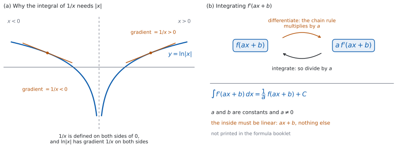

SL 5.10a — Standard integrals（標準的な不定積分と \(ax+b\) との合成）
- \(x^{n}\) の不定積分を、\(n\) が分数のときも求められる。
- \(\dfrac{1}{x}\)、\(\sin x\)、\(\cos x\)、\(e^{x}\) の不定積分を書ける。
- \(\ln\lvert x\rvert\) と \(\ln x\) のどちらを書くかを、定義域から判断できる。
- \(\sin\) と \(\cos\) の符号を取りちがえない。
- 中身が \(ax + b\) の形のとき、\(\dfrac{1}{a}\) をかけることを使える。
- 答えを微分して確かめられる。
- 中身が \(ax + b\) でないときは、この形が使えないと判断できる。
The idea
1. 標準的な \(5\) つの形
微分の表を、逆向きに読みます（SL 5.6a）。
\[ \int x^{n}\,dx = \frac{x^{n+1}}{n+1} + C, \qquad n \ne -1 \tag{1}\]
\[ \int \frac{1}{x}\,dx = \ln|x| + C \tag{2}\]
\[ \int \sin x\,dx = -\cos x + C, \qquad \int \cos x\,dx = \sin x + C \tag{3}\]
\[ \int e^{x}\,dx = e^{x} + C \tag{4}\]
\(+C\) を忘れないでください（SL 5.5）。不定積分の答えには、必ず付けます。
\(\sin\) と \(\cos\) の \(x\) は radian（ラジアン）で測った角です（SL 5.6a）。度で測った角には、この形は使えません。
2. 指数が分数のとき
式 1 は、\(n\) が分数でも使えます。 シラバスは \(n \in \mathbb{Q}\)、つまり有理数まで認めています。
やることは変わりません。 指数を \(1\) 増やして、その新しい指数で割ります。
| もとの形 | 指数の形 | 不定積分 |
|---|---|---|
| \(\sqrt{x}\) | \(x^{\frac{1}{2}}\) | \(\dfrac{2}{3}x^{\frac{3}{2}} + C\) |
| \(\dfrac{1}{\sqrt{x}}\) | \(x^{-\frac{1}{2}}\) | \(2x^{\frac{1}{2}} + C\) |
| \(\sqrt[3]{x}\) | \(x^{\frac{1}{3}}\) | \(\dfrac{3}{4}x^{\frac{4}{3}} + C\) |
分数で割るときは、逆数をかけます。 \(\dfrac{3}{2}\) で割ることは、\(\dfrac{2}{3}\) をかけることです。
まず指数の形に直してください（SL 5.3）。根号や分数のままでは、式 1 にあてはめられません。
根号があるときは、定義域に気をつけてください。 \(\sqrt{x}\) が使えるのは \(x \geq 0\)、\(\dfrac{1}{\sqrt{x}}\) が使えるのは \(x > 0\) のところだけです。このページでは、\(n\) が整数でない \(x^{n}\) は \(x > 0\) の範囲で考えます。
3. \(\dfrac{1}{x}\) と絶対値
\(\dfrac{1}{x}\) は \(x^{-1}\) と書けますが、式 1 は使えません。 \(n = -1\) とすると \(n + 1 = 0\) になり、\(0\) で割ることになるからです。
絶対値が付くのは、\(x < 0\) でも \(\dfrac{1}{x}\) が定義されているからです（図 1 (a)）。\(\ln x\) は \(x > 0\) でしか定義されないので、そのままでは \(x < 0\) の側を表せません。
定義域が \(x > 0\) とわかっているときは、\(\ln x\) と書いてかまいません。 絶対値を外してよい理由が問題文にあるからです。
\(x < 0\) と \(x > 0\) は、つながっていない \(2\) つの区間です。 SL では、問題文が指定した範囲の中で \(C\) を \(1\) つ書けば十分です（SL 5.5）。
定数倍はそのまま前に出ます。
\[ \int \frac{k}{x}\,dx = k\ln|x| + C \tag{5}\]
ここで \(k\) は定数です。 \(x\) を含むものは、この形では前に出せません（第 7 節）。
4. \(\sin\) と \(\cos\) の符号
符号を取りちがえる人がいちばん多いところです。 微分と積分をならべて見てください。
| \(f(x)\) | \(f'(x)\) | \(\displaystyle\int f(x)\,dx\) |
|---|---|---|
| \(\sin x\) | \(\cos x\) | \(-\cos x + C\) |
| \(\cos x\) | \(-\sin x\) | \(\sin x + C\) |
\(\sin\) を積分すると負号が付き、\(\cos\) を積分すると付きません。 微分のときとは逆です。
迷ったら微分して確かめてください。 \(\dfrac{d}{dx}(-\cos x) = \sin x\) なので、\(\displaystyle\int \sin x\,dx = -\cos x + C\) です。
5. \(ax + b\) との合成
中身が \(1\) 次式のときは、最後に \(\dfrac{1}{a}\) をかけます。
\[ \int f'(ax + b)\,dx = \frac{1}{a}f(ax + b) + C, \qquad a \ne 0 \tag{6}\]
式 6 は公式集にありません。 この形は自分で使えるようにしておいてください。
| 積分 | 答え |
|---|---|
| \(\displaystyle\int (ax + b)^{n}\,dx\)（\(n \ne -1\)） | \(\dfrac{(ax + b)^{n+1}}{a(n + 1)} + C\) |
| \(\displaystyle\int \frac{1}{ax + b}\,dx\) | \(\dfrac{1}{a}\ln\lvert ax + b\rvert + C\) |
| \(\displaystyle\int \sin(ax + b)\,dx\) | \(-\dfrac{1}{a}\cos(ax + b) + C\) |
| \(\displaystyle\int \cos(ax + b)\,dx\) | \(\dfrac{1}{a}\sin(ax + b) + C\) |
| \(\displaystyle\int e^{ax + b}\,dx\) | \(\dfrac{1}{a}e^{ax + b} + C\) |
この表は、\(a\)、\(b\) が定数で \(a \ne 0\) のときの形です。 \(\displaystyle\int \frac{1}{ax + b}\,dx\) は \(ax + b \ne 0\) のところで、\(\displaystyle\int (ax + b)^{n}\,dx\) は \(n\) が整数でないとき \(ax + b > 0\) のところで使えます。中身がどの範囲を動くかを、問題文で確かめてください。
\(a\) が負でも同じです。 \(a = -2\) なら \(\dfrac{1}{a} = -\dfrac{1}{2}\) をかけます。
割るのは \(a\) だけで、\(b\) では割りません。 \(b\) は中身にそのまま残します。\(\displaystyle\int e^{5x - 1}\,dx\) なら、答えの中身も \(5x - 1\) のままです。
6. 手順
最後に、必ず微分して確かめてください。 微分してもとの式にもどり、\(+C\) が書いてあれば、その答えで合っています（SL 5.6a）。これは自分でできる検算です。
7. この形が使えないとき
中身が \(ax + b\) でなければ、式 6 は使えません。 \(\displaystyle\int \cos(x^{2})\,dx\) に \(\dfrac{1}{2x}\) をかけても正しくありません。\(\dfrac{1}{a}\) が使えるのは、\(a\) が定数だからです。この積分は、SL のどのやり方でも原始関数を書けません。
\(g'(x)\) がかかっている形は、別のやり方です。 \(\displaystyle\int 2x(x^{2} + 1)^{4}\,dx\) のような形は、SL 5.10b の逆連鎖律で扱います。
積や商の積分に、公式はありません。 微分には積の規則と商の規則がありますが（SL 5.6b）、積分に同じものはありません。
このページの不定積分は、すべて手で求められます。Paper 1 の項目です。
電卓で値を出す場面（SL 5.5）でも、答案にはまず積分した式を書きます。
もとの被積分関数のグラフと、自分の答えを微分したもののグラフを重ねてかくと、\(2\) つが同じ曲線になるかどうかが見えます。
それでも、答案には手で書いた式が要ります。 電卓は確かめに使ってください。

Why it works
なぜ、\(\displaystyle\int \frac{1}{x}\,dx\) に絶対値が付くのでしょうか。 \(x < 0\) の側も表したいからです。
\(x > 0\) では \(\dfrac{d}{dx}\ln x = \dfrac{1}{x}\) です（SL 5.6a）。\(x < 0\) のときは \(-x > 0\) なので \(\ln(-x)\) が使えて、連鎖律で微分すると次のようになります。
\[ \frac{d}{dx}\ln(-x) = \frac{1}{-x} \times (-1) = \frac{1}{x} \]
どちらの側でも、導関数は \(\dfrac{1}{x}\) です。 \(2\) つをまとめて書いたものが \(\ln|x|\) です。
なぜ、\(\displaystyle\int \sin x\,dx\) に負号が付くのでしょうか。 微分して確かめれば分かります。
原始関数の候補を \(\cos x\) にしてみます。\(\dfrac{d}{dx}\cos x = -\sin x\) なので、これでは \(\sin x\) ではなく \(-\sin x\) にもどってしまいます。符号を合わせるために、\(-\cos x\) のほうを選びます。 \(\dfrac{d}{dx}(-\cos x) = \sin x\) です。
なぜ、\(ax + b\) の合成には \(\dfrac{1}{a}\) が要るのでしょうか。 微分すると \(a\) がかかるからです。
連鎖律で \(f(ax + b)\) を微分すると、中身の導関数 \(a\) がかかります（SL 5.6a）。
\[ \frac{d}{dx}f(ax + b) = a\,f'(ax + b) \]
よけいな \(a\) を打ち消すために、\(\dfrac{1}{a}\) をかけておきます（図 1 (b)）。\(\dfrac{1}{a}\) は定数なので、微分してもそのまま残ります。
\[ \frac{d}{dx}\left(\frac{1}{a}f(ax + b)\right) = \frac{1}{a} \times a\,f'(ax + b) = f'(ax + b) \]
なぜ、中身が \(x^{2}\) ではだめなのでしょうか。 \(\dfrac{1}{2x}\) が定数ではないからです。
\(\dfrac{1}{a}\) を前に出せたのは、\(a\) が定数だったからです。中身が \(x^{2}\) なら、かかるのは \(2x\) で、\(x\) を含みます。\(x\) を含むものを、積分の外には出せません。
Worked examples
問題文は英語です。意味が理解できなかったら、問題文の下の「日本語訳」を開いてください。解説は日本語です。
どれも電卓なしで解ける形です。
例題 1 Find \(\displaystyle\int \left(4\sqrt{x} + \frac{6}{x^{2}}\right)dx\), for \(x > 0\).
日本語訳
\(x > 0\) のとき、\(\displaystyle\int \left(4\sqrt{x} + \frac{6}{x^{2}}\right)dx\) を求めなさい。
まず指数の形に直します（第 2 節）。
\[ 4\sqrt{x} + \frac{6}{x^{2}} = 4x^{\frac{1}{2}} + 6x^{-2} \]
項ごとに 式 1 を使います。
\[ \int 4x^{\frac{1}{2}}\,dx = 4 \times \frac{x^{\frac{3}{2}}}{3/2} = \frac{8}{3}x^{\frac{3}{2}} \]
\[ \int 6x^{-2}\,dx = 6 \times \frac{x^{-1}}{-1} = -6x^{-1} \]
\[ \int \left(4\sqrt{x} + \frac{6}{x^{2}}\right)dx = \frac{8}{3}x^{\frac{3}{2}} - \frac{6}{x} + C \]
検算（微分して）。 \(\dfrac{d}{dx}\left(\dfrac{8}{3}x^{\frac{3}{2}}\right) = \dfrac{8}{3} \times \dfrac{3}{2}x^{\frac{1}{2}} = 4x^{\frac{1}{2}}\) ✓ もとの第 \(1\) 項にもどりました。
検算（第 \(2\) 項も）。 \(\dfrac{d}{dx}(-6x^{-1}) = 6x^{-2}\) ✓ こちらももどりました。
検算（指数）。 \(\dfrac{1}{2} + 1 = \dfrac{3}{2}\)、\(-2 + 1 = -1\) ✓ どちらも \(1\) 増えています。
検算（分数で割る）。 \(\dfrac{3}{2}\) で割ることは \(\dfrac{2}{3}\) をかけることなので、\(4 \times \dfrac{2}{3} = \dfrac{8}{3}\) ✓
\[4\sqrt{x} + \frac{6}{x^{2}} = 4x^{\frac{1}{2}} + 6x^{-2}\] \[\int \left(4x^{\frac{1}{2}} + 6x^{-2}\right)dx = \frac{8}{3}x^{\frac{3}{2}} - \frac{6}{x} + C\]
例題 2 Find \(\displaystyle\int \left(\frac{3}{x} + 2e^{x} - \sin x\right)dx\).
日本語訳
\(\displaystyle\int \left(\frac{3}{x} + 2e^{x} - \sin x\right)dx\) を求めなさい。
\[ \int \frac{3}{x}\,dx = 3\ln|x| \]
\[ \int 2e^{x}\,dx = 2e^{x} \]
\[ \int (-\sin x)\,dx = \cos x \]
\[ \int \left(\frac{3}{x} + 2e^{x} - \sin x\right)dx = 3\ln|x| + 2e^{x} + \cos x + C \]
検算（符号）。 \(\dfrac{d}{dx}\cos x = -\sin x\) ✓ もとの \(-\sin x\) にもどりました。
検算（\(x < 0\) でも）。 \(x < 0\) では \(\ln|x| = \ln(-x)\) で、微分すると \(\dfrac{1}{-x} \times (-1) = \dfrac{1}{x}\) ✓ 負の側でも、もとの \(\dfrac{3}{x}\) にもどります（第 3 節）。
検算（\(e^{x}\)）。 \(\dfrac{d}{dx}(2e^{x}) = 2e^{x}\) ✓ 変わらないのが \(e^{x}\) の性質です。
検算（定数を足しても）。 \(3\ln|x| + 2e^{x} + \cos x + 7\) を微分しても同じ式にもどります ✓ 定数が決まらないので、\(C\) を残します。
\[\int \left(\frac{3}{x} + 2e^{x} - \sin x\right)dx = 3\ln|x| + 2e^{x} + \cos x + C\]
例題 3 Find each of the following.
(a) \(\displaystyle\int \cos(3x - 1)\,dx\)
(b) \(\displaystyle\int e^{5x - 1}\,dx\)
日本語訳
次のそれぞれを求めなさい。
(a) \(\displaystyle\int \cos(3x - 1)\,dx\)
(b) \(\displaystyle\int e^{5x - 1}\,dx\)
(a) 中身は \(3x - 1\) なので \(a = 3\) です（第 5 節）。\(\cos\) の積分は \(\sin\) で、それに \(\dfrac{1}{3}\) をかけます。
\[ \int \cos(3x - 1)\,dx = \frac{1}{3}\sin(3x - 1) + C \]
(b) 中身は \(5x - 1\) なので \(a = 5\) です。\(e^{x}\) の積分は \(e^{x}\) のままで、\(\dfrac{1}{5}\) をかけます。
\[ \int e^{5x - 1}\,dx = \frac{1}{5}e^{5x - 1} + C \]
検算（(a) を微分して）。 \(\dfrac{d}{dx}\left(\dfrac{1}{3}\sin(3x - 1)\right) = \dfrac{1}{3} \times 3\cos(3x - 1) = \cos(3x - 1)\) ✓
検算（(b) を微分して）。 \(\dfrac{d}{dx}\left(\dfrac{1}{5}e^{5x - 1}\right) = \dfrac{1}{5} \times 5e^{5x - 1} = e^{5x - 1}\) ✓
検算（中身を落としたら）。 もし \(\dfrac{1}{3}\sin(3x)\) と書くと、微分して \(\cos(3x)\) になり、もとの \(\cos(3x - 1)\) とはちがう関数です ✓ 中身の \(-1\) は落とせません。
検算（かけるのは \(\dfrac{1}{a}\)）。 \(a = 3\) なら \(\dfrac{1}{3}\)、\(a = 5\) なら \(\dfrac{1}{5}\) です ✓ \(3\) や \(5\) をかけるのではありません。
(a) \[\int \cos(3x - 1)\,dx = \frac{1}{3}\sin(3x - 1) + C\]
(b) \[\int e^{5x - 1}\,dx = \frac{1}{5}e^{5x - 1} + C\]
例題 4 A curve is defined for \(x > \dfrac{1}{2}\), and its gradient is given by \(\dfrac{dy}{dx} = \dfrac{4}{2x - 1}\). The curve passes through the point \((1, 5)\).
(a) Find \(y\) in terms of \(x\).
(b) Explain why the modulus sign is not needed in your answer.
日本語訳
ある曲線が \(x > \dfrac{1}{2}\) で定義され、その傾きは \(\dfrac{dy}{dx} = \dfrac{4}{2x - 1}\) です。この曲線は点 \((1, 5)\) を通ります。
(a) \(y\) を \(x\) の式で表しなさい。
(b) 答えに絶対値の記号が要らない理由を説明しなさい。
(a) 中身は \(2x - 1\) なので \(a = 2\) です（第 5 節）。
\[ y = \int \frac{4}{2x - 1}\,dx = 4 \times \frac{1}{2}\ln\lvert 2x - 1\rvert + C = 2\ln\lvert 2x - 1\rvert + C \]
\(x = 1\)、\(y = 5\) を代入して \(C\) を決めます（SL 5.5）。
\[ 2\ln 1 + C = 5 \]
\(\ln 1 = 0\) なので \(C = 5\) です。
\[ y = 2\ln(2x - 1) + 5 \]
(b) 定義域が \(x > \dfrac{1}{2}\) なので、\(2x - 1 > 0\) です。中身がつねに正なら、\(\lvert 2x - 1\rvert = 2x - 1\) です。
検算（微分して）。 \(\dfrac{d}{dx}\bigl(2\ln(2x - 1)\bigr) = 2 \times \dfrac{2}{2x - 1} = \dfrac{4}{2x - 1}\) ✓ もとの傾きにもどりました。
検算（通る点）。 \(x = 1\) のとき \(2\ln 1 + 5 = 5\) ✓ \((1, 5)\) を通ります。
検算（\(\dfrac{1}{a}\) をかけたか）。 \(4 \times \dfrac{1}{2} = 2\) ✓ \(4 \times 2 = 8\) ではありません。
検算（定義域の端）。 \(x = \dfrac{1}{2}\) では \(2x - 1 = 0\) となり \(\ln\) が使えません ✓ 定義域が \(x > \dfrac{1}{2}\) なのはそのためです。
試験ではこう書く
The curve is defined only for \(x > \frac{1}{2}\), so on this domain \(2x - 1 > 0\). The modulus sign is needed only when the expression inside the logarithm could be negative, and here it never is, so \(|2x - 1| = 2x - 1\) and the modulus sign can be dropped.
(a) \[y = \int \frac{4}{2x - 1}\,dx = 4 \times \frac{1}{2}\ln\lvert 2x - 1\rvert + C\] \[y = 2\ln\lvert 2x - 1\rvert + C\] \[2\ln 1 + C = 5 \quad \Rightarrow \quad C = 5\] \[y = 2\ln(2x - 1) + 5\]
(b) \(x > \frac{1}{2}\), so \(2x - 1 > 0\) and \(|2x - 1| = 2x - 1\)
Common errors
定義域が \(x > 0\) と分かっていないかぎり、\(\ln|x|\) が要ります（第 3 節）。
負号が付いて \(-\cos x + C\) です（第 4 節）。微分して確かめてください。
中身を写すだけでは足りません（第 5 節）。微分すると \(a\) が余ります。
微分で \(a\) がかかるので、積分では \(a\) で割ります（第 5 節）。
\(\dfrac{1}{a}\) を前に出せるのは、\(a\) が定数のときだけです（第 7 節）。
先に \(\sqrt{x} = x^{\frac{1}{2}}\) のように指数の形へ直します（第 2 節）。
Exercises
各問題に、折りたたみが \(3\) つ付いています。日本語訳、解答例（答案用紙に書くべきこと。英語です。英語の答案例が付くものもあります）、解説（なぜそうなるか。日本語です）。
まず自分で解いて、次に解答例と見くらべてください。解説は、合わなかったときだけ開けば十分です。
1 Find \(\displaystyle\int \left(\frac{2}{\sqrt{x}} - x^{3}\right)dx\), for \(x > 0\).
日本語訳
\(x > 0\) のとき、\(\displaystyle\int \left(\frac{2}{\sqrt{x}} - x^{3}\right)dx\) を求めなさい。
\[\frac{2}{\sqrt{x}} - x^{3} = 2x^{-\frac{1}{2}} - x^{3}\]
\[\int \left(2x^{-\frac{1}{2}} - x^{3}\right)dx = 4\sqrt{x} - \frac{x^{4}}{4} + C\]
指数が負の分数でも、やることは変わりません（第 2 節）。\(-\dfrac{1}{2} + 1 = \dfrac{1}{2}\) で、\(\dfrac{1}{2}\) で割ることは \(2\) をかけることです。
検算（微分して）。 \(\dfrac{d}{dx}\left(4x^{\frac{1}{2}}\right) = 4 \times \dfrac{1}{2}x^{-\frac{1}{2}} = 2x^{-\frac{1}{2}}\) ✓ もとの第 \(1\) 項にもどりました。
検算（第 \(2\) 項）。 \(\dfrac{d}{dx}\left(-\dfrac{x^{4}}{4}\right) = -x^{3}\) ✓
検算（指数が \(1\) 増えたか）。 \(-\dfrac{1}{2}\) が \(\dfrac{1}{2}\) に、\(3\) が \(4\) になっています ✓
検算（定義域）。 \(\dfrac{1}{\sqrt{x}}\) が使えるのは \(x > 0\) のところだけです ✓ 問題文の条件と合っています。
2 Find \(\displaystyle\int \left(\frac{5}{x} - 3\cos x + 2e^{x}\right)dx\).
日本語訳
\(\displaystyle\int \left(\frac{5}{x} - 3\cos x + 2e^{x}\right)dx\) を求めなさい。
\[\int \left(\frac{5}{x} - 3\cos x + 2e^{x}\right)dx = 5\ln|x| - 3\sin x + 2e^{x} + C\]
検算（微分して）。 \(\dfrac{d}{dx}\bigl(5\ln|x|\bigr) = \dfrac{5}{x}\)、\(\dfrac{d}{dx}(-3\sin x) = -3\cos x\)、\(\dfrac{d}{dx}(2e^{x}) = 2e^{x}\) ✓ \(3\) 項とももどりました。
検算（\(\cos\) の符号）。 \(\cos\) を積分しても負号は付きません ✓（第 4 節）。答えの負号は、前に付いていた \(-3\) のものです。
検算（\(\sin\) だったら）。 もし \(-3\sin x\) を積分するのなら、答えは \(+3\cos x\) です ✓ 符号が逆になります。
3 Find \(\displaystyle\int \sqrt{4x + 1}\,dx\).
日本語訳
\(\displaystyle\int \sqrt{4x + 1}\,dx\) を求めなさい。
\[\sqrt{4x + 1} = (4x + 1)^{\frac{1}{2}}\]
\[\int \sqrt{4x + 1}\,dx = \frac{(4x + 1)^{\frac{3}{2}}}{6} + C\]
指数の形に直してから、表 3 の \(1\) 行目を使います。\(n = \dfrac{1}{2}\)、\(a = 4\) なので、割る数は \(a(n + 1) = 4 \times \dfrac{3}{2} = 6\) です。
検算（微分して）。 \(\dfrac{d}{dx}\left(\dfrac{(4x + 1)^{\frac{3}{2}}}{6}\right) = \dfrac{1}{6} \times \dfrac{3}{2}(4x + 1)^{\frac{1}{2}} \times 4 = (4x + 1)^{\frac{1}{2}}\) ✓
検算（規則を \(2\) つ使う）。 分数の指数（第 2 節）と \(ax + b\)（第 5 節）の両方が要ります ✓ どちらか一方だけでは足りません。
検算（定義域）。 \(\sqrt{4x + 1}\) が使えるのは \(4x + 1 \geq 0\)、つまり \(x \geq -\dfrac{1}{4}\) のところです ✓
4 Find \(\displaystyle\int \sin(4x + 1)\,dx\).
日本語訳
\(\displaystyle\int \sin(4x + 1)\,dx\) を求めなさい。
\[\int \sin(4x + 1)\,dx = -\frac{1}{4}\cos(4x + 1) + C\]
\(\sin\) の積分の負号と、合成の \(\dfrac{1}{4}\) が両方要ります（第 5 節）。
検算（微分して）。 \(\dfrac{d}{dx}\left(-\dfrac{1}{4}\cos(4x + 1)\right) = -\dfrac{1}{4} \times \bigl(-4\sin(4x + 1)\bigr) = \sin(4x + 1)\) ✓
検算（負号が \(2\) 回）。 \(\sin\) の積分で \(1\) 回、\(\cos\) の微分でもう \(1\) 回です ✓ 打ち消し合って正にもどります。
検算（中身）。 \(4x + 1\) のまま写しています ✓
5 Find \(\displaystyle\int \frac{1}{5x - 2}\,dx\).
日本語訳
\(\displaystyle\int \frac{1}{5x - 2}\,dx\) を求めなさい。
\[\int \frac{1}{5x - 2}\,dx = \frac{1}{5}\ln\lvert 5x - 2\rvert + C\]
6 Find \(\displaystyle\int e^{-2x}\,dx\).
日本語訳
\(\displaystyle\int e^{-2x}\,dx\) を求めなさい。
\[\int e^{-2x}\,dx = -\frac{1}{2}e^{-2x} + C\]
\(a = -2\) なので、かけるのは \(-\dfrac{1}{2}\) です（第 5 節）。
検算（微分して）。 \(\dfrac{d}{dx}\left(-\dfrac{1}{2}e^{-2x}\right) = -\dfrac{1}{2} \times (-2)e^{-2x} = e^{-2x}\) ✓
検算（符号を取りちがえたら）。 \(\dfrac{1}{2}e^{-2x}\) を微分すると \(-e^{-2x}\) で、もとの式と符号が逆になります ✓ だから \(-\dfrac{1}{2}\) が要ります。
検算（\(b = 0\)）。 中身は \(-2x\) で \(b = 0\) です ✓ \(b\) がなくても同じ形が使えます。
7 Find \(\displaystyle\int (3x + 2)^{4}\,dx\). Verify your answer by differentiating it.
日本語訳
\(\displaystyle\int (3x + 2)^{4}\,dx\) を求めなさい。答えを微分して、正しいことを確かめなさい。
\[\int (3x + 2)^{4}\,dx = \frac{(3x + 2)^{5}}{15} + C\]
\[\frac{d}{dx}\left(\frac{(3x + 2)^{5}}{15}\right) = \frac{5(3x + 2)^{4} \times 3}{15} = (3x + 2)^{4} \ \checkmark\]
指数を \(1\) 増やして \(5\) で割り、さらに \(a = 3\) で割ります（表 3）。\(5 \times 3 = 15\) です。
検算（微分して）。 \(\dfrac{d}{dx}\left(\dfrac{(3x + 2)^{5}}{15}\right) = \dfrac{5(3x + 2)^{4} \times 3}{15} = (3x + 2)^{4}\) ✓
検算（展開して最高次だけ見て）。 \((3x + 2)^{4}\) の \(x^{4}\) の項は \(81x^{4}\) で、これを積分すると \(\dfrac{81}{5}x^{5}\) です。答えの \((3x + 2)^{5}\) の \(x^{5}\) の項は \(243x^{5}\) なので、\(15\) で割ると \(\dfrac{243}{15}x^{5} = \dfrac{81}{5}x^{5}\) ✓ 合っています。
検算（割る数）。 \(a(n + 1) = 3 \times 5 = 15\) ✓
8 A curve is defined for \(x > 0\), and its gradient is given by \(\dfrac{dy}{dx} = \dfrac{2}{x} + e^{x}\). The curve passes through the point \((1, 4)\). Find \(y\) in terms of \(x\).
日本語訳
ある曲線が \(x > 0\) で定義され、その傾きは \(\dfrac{dy}{dx} = \dfrac{2}{x} + e^{x}\) です。この曲線は点 \((1, 4)\) を通ります。\(y\) を \(x\) の式で表しなさい。
\[y = 2\ln x + e^{x} + C\]
\[2\ln 1 + e + C = 4 \quad \Rightarrow \quad C = 4 - e\]
\[y = 2\ln x + e^{x} + 4 - e\]
積分してから、通る点を代入して \(C\) を決めます（SL 5.5）。
検算（絶対値を外してよい理由）。 定義域が \(x > 0\) なので \(\ln x\) と書けます ✓（第 3 節）。
検算（\(\ln 1\)）。 \(\ln 1 = 0\) なので、残るのは \(e + C = 4\) です ✓
検算（微分して）。 \(\dfrac{d}{dx}\left(2\ln x + e^{x} + 4 - e\right) = \dfrac{2}{x} + e^{x}\) ✓ \(4 - e\) は定数なので消えます。
検算（\(C\) の形）。 \(4 - e\) は \(1\) つの数です ✓ \(e\) は約 \(2.718\) なので、\(C\) は約 \(1.28\) です。
9 A student writes \(\displaystyle\int \cos(2x)\,dx = 2\sin(2x) + C\). Identify the error and give the correct answer.
日本語訳
ある生徒が \(\displaystyle\int \cos(2x)\,dx = 2\sin(2x) + C\) と書きました。誤りを指摘し、正しい答えを書きなさい。
the student multiplied by \(a\) instead of dividing by \(a\)
\[\int \cos(2x)\,dx = \frac{1}{2}\sin(2x) + C\]
合成のときにかけるのは \(\dfrac{1}{a}\) です（第 5 節）。
検算（生徒の答えを微分して）。 \(\dfrac{d}{dx}\bigl(2\sin(2x)\bigr) = 4\cos(2x)\) ✓ もとの式の \(4\) 倍になってしまいます。
検算（正しい答えを微分して）。 \(\dfrac{d}{dx}\left(\dfrac{1}{2}\sin(2x)\right) = \dfrac{1}{2} \times 2\cos(2x) = \cos(2x)\) ✓
検算（ずれの大きさ）。 \(\dfrac{1}{2}\) をかけるべきところを \(2\) にしたので、生徒の答えは正しい値の \(4\) 倍になっています ✓ \(2\) は \(\dfrac{1}{2}\) の \(4\) 倍だからです。
試験ではこう書く
The student multiplied by \(a\) instead of dividing by \(a\). Here \(a = 2\), so the factor should be \(\frac{1}{2}\), not \(2\). Differentiating \(2\sin(2x)\) gives \(4\cos(2x)\), not \(\cos(2x)\). The correct answer is \(\frac{1}{2}\sin(2x) + C\).
10 Explain why \(\displaystyle\int \cos(3x + 4)\,dx\) can be found using the rule for a linear inside, but \(\displaystyle\int \cos(3x^{2} + 4)\,dx\) cannot.
日本語訳
\(\displaystyle\int \cos(3x + 4)\,dx\) はこのページの \(ax + b\) の規則で求められるのに、\(\displaystyle\int \cos(3x^{2} + 4)\,dx\) では求められない理由を説明しなさい。
the inside of the first is linear, so differentiating multiplies by the constant \(3\), which can be divided out
the inside of the second is not linear: differentiating multiplies by \(6x\), which is not a constant and cannot be taken outside the integral
\(\dfrac{1}{a}\) を前に出せるのは、\(a\) が定数のときだけです（第 7 節）。
検算（\(1\) つめ）。 \(\dfrac{d}{dx}\left(\dfrac{1}{3}\sin(3x + 4)\right) = \dfrac{1}{3} \times 3\cos(3x + 4) = \cos(3x + 4)\) ✓ うまくいきます。
検算（\(2\) つめ）。 \(\dfrac{d}{dx}\sin(3x^{2} + 4) = 6x\cos(3x^{2} + 4)\) ✓ 余分に付くのは \(6x\) で、定数ではありません。
検算（\(\dfrac{1}{6x}\) ではだめな理由）。 \(\dfrac{1}{6x}\) は \(x\) を含むので、\(\dfrac{d}{dx}\left(\dfrac{1}{6x}\sin(3x^{2} + 4)\right)\) には商の規則が要り、\(\cos(3x^{2} + 4)\) にはもどりません ✓
試験ではこう書く
The rule \(\int f'(ax+b)\,dx = \frac{1}{a}f(ax+b)+C\) works because differentiating \(f(ax+b)\) multiplies by \(a\), which is a constant, so the extra factor can be cancelled by the constant \(\frac{1}{a}\). In \(\cos(3x+4)\) the inside is linear, with \(a = 3\). In \(\cos(3x^{2}+4)\) the inside is not linear: differentiating would multiply by \(6x\), which depends on \(x\). A factor containing \(x\) cannot be moved outside the integral, so no constant multiplier fixes it and the rule does not apply.